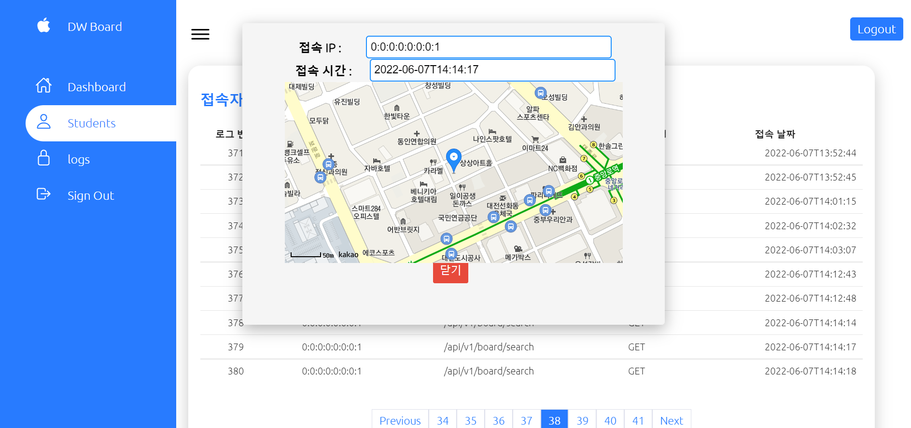

학원 게시판 사이트 제작
개요
수업시간에 진행했던, CRUD를 기초로 간단한 학원 게시판을 개발했습니다. 개발기간은 약 2주 소요되었고 처음으로 클라우드(AWS)에 배포(Deploy)까지 했습니다.
경험 정리
• RestController와 Controller를 따로 만들어 백엔드와 프론트가 통신하는 그림을 공부했고, AJAX를 이용해 비동기 처리하는 방식을 알게됐습니다.
• MVC 패턴을 베이스로 하여 Controller, Service, Mapper의 구조를 공부하는 것에 중점을 두었습니다.
• pageHandler 라이브러리를 사용하여 페이징 처리 할 수 있는 방법을 배웠습니다.
• Ajax를 이용하여 비동기처리 방식에 대해 배웠고 장단점을 파악할 수 있었습니다.
• Update, delete, insert는 VO 객체로 매핑하고, select는 HashMap을 매핑하는 규칙도 정해봤습니다.
• WAR 와 JAR의 차이점을 알고 AWS EC2에 WAR파일을 최종 deploy했습니다.
※ 해당 게시판 소스는 board 바로가기와 (계정 : 초밥, 1234) board 깃허브 에서 확인하실 수 있습니다.
느낀점
• CRUD를 이용해서 디비버의 데이터 베이스와 연동 할 수 있는 점을 배웠습니다.
• ajax 사용시 히스토리 관리가 안된다는 점이 아쉬웠습니다. 다음 게시판 제작시엔 동기식 방법을 사용하고 싶습니다.
• 마이바티스 사용시 쿼리문을 사용해 데이터 필터링이 가능한 점이 놀라웠습니다. 다음엔 동적 쿼리를 이용해서 좀 더 세밀한 작업을 해보고 싶습니다.
Technologies:
- - HTML5&CSS5
- - JavaScript
- - jQuery
- - AJAX
- - Git
- - Restful API
- - Spring Boot(2.6.7v)
- - Spring Security
- - Spring poi
- - JAVA(12.0.2v)
- - MySQL
- - Mybatis
- - Gradle
- - JSP&JSTL
- - Eclipse
- - VSCode
- - AWS EC2(CentOS)
- - AWS RDS(MySQL)
Entity Relationship Diagram
• 사이트 개발 전 DB모델링을 통해 객체간의 관계를 파악했습니다.회원가입 페이지
• 회원가입 입력시에 필요한 주소 검색 기능을 구현했습니다.Log 기록 페이지
• 접속한 위치를 KAKAO Map api로 나타내 로그를 기록하는 페이지를 구현했습니다.
